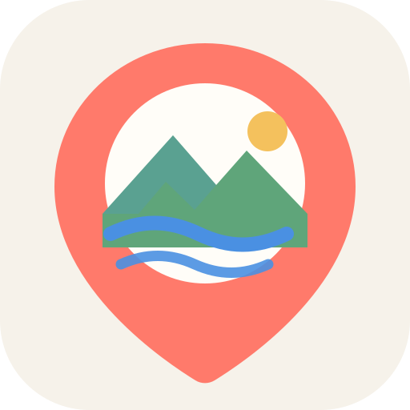

my
C
o
c
o
m
o
ここも、行きたいが見つかる。
いつもの日が、
ちょっと特別になる。
ここも、行きたいが見つかる。
目的を選んでください
カップル
家族
一人旅
観光・定番
カフェ・グルメ
その他
ホーム
お気に入り
設定
‹
カップル
FUKUOKA GUIDE
今日は、どこ行く？
目的を選ぶだけ。おすすめだけを地図に出します。
❤️ デート
🎈 子育て
🧳 一人旅
TODAY'S PICK
福岡タワー
夜景デートの定番
❤️ デート
4スポット
カップル
◎